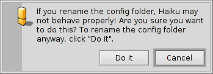

Español
Español Français
Français Deutsch
Deutsch Italiano
Italiano Русский
Русский Svenska
Svenska 日本語
日本語 Українська
Українська 中文 ［中文］
中文 ［中文］ Português
Português Suomi
Suomi Slovenčina
Slovenčina English
EnglishDisposición del sistema de archivos
El sistema de archivos de Haiku es muy transparente, siempre intenta usar nombres lógicos para sus archivos y carpetas que no confundan el usuario. Los archivos y carpetas que son de importancia para el sistema para funcionar apropiadamente se protegen de la modificación accidental, mostrando uno de estos avisos:

El segundo aviso se muestra cuando se intenta renombrar o borrar algo en la jerarquía del sistema. El botón "" (hágalo) sólo se puede presionar solamente mientras se sujeta la tecla MAYÚSCULAS.
Generalmente, hay tres ramas separadas en la carpeta raíz del volumen de inicio del sistema:
| /boot/system/ | pertenece al sistema. ¡No tocar! | |
| /boot/common/ | contiene los archivos compartidos entre usuarios. | |
| /boot/home/ | es la carpeta personal del usuario, donde se mantiene la información y las preferencias personales. |
 La carpeta del sistema - /boot/system/
La carpeta del sistema - /boot/system/
Bajo el predecesor de Haiku, BeOS, esta carpeta se llamaba /boot/beos/. Todavía se puede encontrar documentación vieja (p. ej. en el BeBook original).
Como sea que se llame, no se debería alterar lo que está dentro. Cada actualización de Haiku puede agregar, remover o sobrescribir cualquier cosa dentro de ella. Si se desea agregar funcionalidad, tal vez con otros agregados de Tracker Add-Ons o Traductores o tal vez algún controlador de dispositivo, ha de instalarlos dentro de su propia jerarquía en /boot/home/ o, si se supone que será para todos los usuarios, debajo de /boot/common/. Mientras Haiku no sea multiusuario, esta distinción no tiene efecto aparente, pues sólo hay un usuario con una carpeta home. Pero ya que habrá soporte para más de un usuario eventualmente, tiene sentido aprender la manera correcta desde el principio.
Así que, digamos que se desea instalar un nuevo Traductor para el último formato de imagen, no lo copie simplemente dentro de la carpeta de sistema respectiva. Recuerde: ¡No tocar!
En su lugar, póngalo dentro de la jerarquía espejo debajo de /boot/common/ o /boot/home/config/.
En nuestro ejemplo, la localización de los Traductores en la carpeta de sistema sería
/boot/system/add-ons/Translators/
Así que la carpeta "espejo" de usuario está entre
/boot/home/config/add-ons/Translators/
o
/boot/common/add-ons/Translators/
Esto tiene otra ventaja: si el componente que se ha instalado estropea las osas (lo cual es probable si se instalan controladores de hardware como de esta manera también) hay la opción de elegir "Disable User Add-Ons" (Deshabilitar agregados del usuario) del menú Boot Loader y así siempre ser capaz de iniciar sin el componente problemático.
La mayoría de las veces, sin embargo, no querrá lidiar con estas cosas en lo absoluto, pues cada software que viene de una fuente confiable incluye una rutina de instalación que maneja estas cosas.
La carpeta común - /boot/common/
Haiku todavía no es un sistema multiusuario. Una vez que lo sea, todos los usuarios tendrán su propia carpeta dentro de home que no se accederá por nadie más. Todas las aplicaciones y componentes adicionales como agregados de Tracker, traductores, etc., así como cualquier información que se deba compartir entre distintos usuarios, tiene se ubicarse dentro de /boot/common/.
La carpeta de inicio - /boot/home/
Esta carpeta le pertenece. Aquí puede crear y borrar archivos y carpetas como desee. Sin embargo, no debería mover demasiadas cosas dentro del directorio ~/config/ y sus subcarpetas. Se podrían borrar, p. ej., la carpeta ~/config/settings/ sin dañar al sistema mismo, ¿pero quién quiere perder todas sus configuraciones y selecciones de aplicaciones? En cualquier caso, el sistema le advertirá con la alerta mencionada al principio.
Además de la carpeta ~/config/add-ons/, l cual sirve de espejo a la carpeta de agregados del sistema para componentes adicionales como se describe arriba, hay algunas otras carpetas de interés. (Por cierto, la tilde ("~") es un atajo para su carpeta de inicio, para que no tenga que escribir siempre "/boot/home/" en la Terminal.)
| Predeterminadamente, esta es donde se guardan sus correos. | ||
| ~/queries | Las consultas se almacenan, predeterminadamente, por un tiempo temporal de 7 días, en esta carpeta. | |
| ~/config/be/ | De nuevo de nuestro legado del BeOS, la carpeta be contiene lo que se muestra en el menú del Deskbar. Pueden agregarse o removerse elementos poniendo archivos, carpetas, enlaces y consultas dentro de esta carpeta. | |
| ~/config/bin/ | Complementa la carpeta de sistema /boot/system/bin/ y mantiene todos sus programas de línea de comandos. | |
| ~/config/boot/ | Esta carpeta es el lugar para Scripts de usuario que se ejecutan antes que el sistema inicie o se apague. | |
| ~/config/boot/launch/ | Enlaza a programas o documentos en esta carpeta que automáticamente se ejecutan en cada inicio. | |
| ~/config/data/fonts/ | Simplemente copie un tipo de letra TrueType o Postscript dentro de esta carpeta y se podrá utilizar enseguida. | |
| ~/config/settings/ | Esta carpeta contiene las selecciones para todas las aplicaciones y unas cuantas configuraciones para el sistema. Algunas aplicaciones administran sus configuraciones en sus propias subcarpetas, otros simplemente ponen su archivo de configuración allí. | |
| ~/config/settings/beos_mime/ | En esta base de datos MIME Haiku mantiene récord de todos los distintos tipos de archivo y sus selecciones. | |
| ~/config/settings/kernel/drivers/ | Hay un archivo de configuraciones que puede ser de interés: kernel ofrece configuraciones de bajo nivel como deshabilitar SMP, activar depuración serial o habilitar administración de energía avanzada. Se activa la línea de configuración removiendo el símbolo de comentario "#". ¡Sea cuidadoso aquí! | |
| ~/config/settings/Tracker/ | Además de los varios archivos de configuración para Tracker, hay algunas subcarpetas interesantes: | |
| DefaultFolderTemplate/ | Muestra y arregla todos los atributos y el tamaño de la ventana a su gusto. Cada carpeta nueva que se cree la usará como plantilla. | |
| DefaultQueryTemplates/ | Se puede definir la disposición de las ventanas de resultado de consulta para ciertos tipos de archivo. Vea el tema Consultas: la ventana de resultados. | |
| Go/ | Coloca enlaces a sus ubicaciones favoritas aquí para tenerlas disponibles, p. ej., en los paneles abrir y guardar. Vea el tema GUI de Haiku: Favoritos y carpetas recientes. | |
| Tracker New Template/ | Agregue una plantilla para cualquier tipo de archivo que luego estará disponible en el menú (Archivo | Nuevo) de Tracker. Vea el tema Tracker: Trabajar con archivos. |